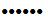

| Screen layout / Content Pane | |
Even though configuration panels are specific to the host type and the branch selected, there are some similarities among them.
The upper section of the panel always contains the alias of the branch selected, the enabled selection, the ready indication, and the host type and transport description.
The middle section of the panel always contains one or more tabbed sub-panels.
Some of the tabs are consistent across host types. For example, the General and Notes tabs above are used for ALL host types.
Password fields will mask the actual value entered (for example, ).
The lower section of the panel always contains Apply and Reset buttons. These buttons are enabled only for active hosts when changes have been entered into the panel.